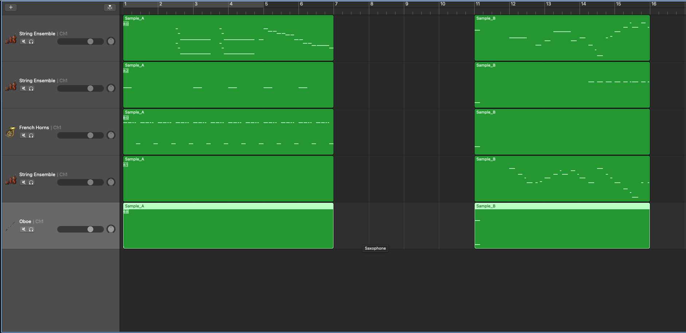

🎧🎶 MusicLang - your music co-pilot 🎧🎶
Introduction
MusicLang has been designed to be the foundational model of reference for music composition. We are convinced that generative technologies should act as companions to artists in the music creation process, rather than as tools capable of composing pieces autonomously. Recent breakthroughs in AI, especially with the rise of Large Language Models (LLMs), have demonstrated the potential of generative technologies in an industry where creativity is continuously pushed forward.
With that in mind, we are working hard to bring MusicLang to life as the market's leading music agent, acting as the co-pilot of choice for artists. Unlike most models on the market, MusicLang:
- Combines the rich information contained in symbolic music to leverage the full capabilities of LLMs for music use cases;
- Develops features that allow users to benefit from fine-grained control, such as:
- Chord progressions control;
- Control over the instruments to be generated;
- Control of note density;
- Control of polyphony;
- Control of the register/range of a voice;
- Control of the level of "dissonance" in a given scale;
- And more.
Additionally, MusicLang:
- Integrates seamlessly into the current artists' creation workflow, allowing easy back and forth with your favorite DAW by working with MIDI files;
- Respects the copyright of artists:
- Regarding the training dataset: thanks to the high relevance of symbolic music, the model does not need an astronomical volume of data to be performant, unlike the highly data-consuming audio models. We are only using CC0 data;
- As a copilot, MusicLang ensures that artists remain the sole owners of the intellectual property and the creative direction of their work
After the successful release of the open source version of our foundation model (+387 ⭐️ on GitHub / + 140 ⭐️ on HuggingFace, thanks again!) and the launch of our enterprise API (contact us for more info!), we are publishing a series of blog posts that will showcase how MusicLang can be used as your copilot for composing your next song. Let’s start !
Step 1: Choose your artistic direction
Step 2 : Ideas generation with MusicLang
Step 3 : Generating transitions between ideas with MusicLang
Creating a song with MusicLang as a copilot
Step 1: Choose your artistic direction
Before diving into the technical aspects of composition, it is crucial to establish the artistic direction of your piece. This initial step involves deciding on the overall mood, genre, and instrumentation that will define the character of your song. Consider what emotions you want to convey and how the choice of instruments and musical style will support that vision. In our example, we opted for a classical orchestration because we aim to compose a song that is epic and masterful, perfectly suited for inclusion in a grand saga.
Step 2 : Ideas generation with MusicLang
a. The cold start problem
Having the artistic direction is a good start, but we are still at the very beginning of the process. Since we don't have any existing templates for this kind of atmosphere, we are using MusicLang to help us get started.
b. Define a template and generate samples
We’ll use MusicLang to generate 16-bar samples by providing a template, which consists of the list of the instruments that match the desired music style. To get a classical orchestration that would fit our realm, let's pick up the following instruments:
- Our template: a violin, a cello, a french horn, a viola and an oboe:

Screenshot from SongCrafter (private access on demand only) - samples generations from a template
Our goal is to generate a bunch of generations to create a catalog of 16 bars ideas in a specific orchestration (subset of instrument) that will give the overall style of the song. We created around 20 ideas generated fully by musiclang.
c. Pick up the best generations
Once generated and for a high quality rendering, we opened up our favorite DAW and selected the three best that would fit together in a song, it was idea 9, 13 and 15. We will call these ideas A,B and C in the following. Here are the 3 samples selected:
| Title | Sound |
|---|---|
| Sample_A | |
| Sample_B | |
| Sample_C |
Step 3 : Create transitions between ideas
As we only generated samples that represent the main elements of our would-be composition, we now have to create the right transitions between each part. Based on the previous elements generated in step 1, we chose to go with the following structure of our song, A, B, C, A structure. It seemed quite natural given our set of ideas.
a. Generate transitions with MusicLang
One of the main interests of MusicLang is to use existing music as a prompt. In our case, this feature will help us to generate transitions between two of our samples. We’ll generate several 4-bars transition with our so called “masking model” between A & B:
- To do so, as the context we use the last 6 bars of A and first 6 bars of B. 
- Let’s now upload the two midi files into MusicLang transition feature to generate 4 bars in between;
- Download the transition as a midi file.
Screenshot - Merging my two samples to prepare a template for a four-bar transition generation in MusicLang.
Here is the 4-bar transition that has been generated:
| Title | Sound |
|---|---|
| Transition_A_to_B |
With this process, we get multiple variations for each possible transitions (A-B, B-C, C-A) Once it's generated, we return to our favorite DAW and test out the transitions between all parts to find the ones we like. We now have a full structure for our song, with bridges between parts.
Step 4 : Polishing the final track
Our song is almost ready, but we still need to work on the details. Since we wanted a cinematic song that is dynamic and playful, we are refining it by performing the following steps:
- We used MusicLang once again to generate a timpani and drums accompaniment for the whole track;
- We doubled the cello part with a pizzicato double bass, one octave below, to achieve the same atmosphere;
- We reinforced the melodic lines: the violin has been replaced by trumpets and doubled by clarinets, while the French horn has been doubled by a tenor trombone;
- We used almost exclusively staccato instruments to create a playful rhythmic atmosphere.
Finally, we did some very minimal mixing and mastering. This part can clearly be improved in our final result, but the goal of our article was to focus on the composition, highlighting how MusicLang has been designed to act as your music creation co-pilot. Here is the final result:
| Title | Sound |
|---|---|
| Final_track |
Conclusion & next steps:
We have a good base framework to create new songs without replacing the artistic process, but we could have done better:
- We can input some melodies we have initially to generate orchestration ideas that follow these melodic lines;
- We could have refined the ideas further to make them more interesting by iterating with MusicLang or manually;
- The song lacks an overall development section, which could have been enhanced by taking an interesting section of the piece and generating different possible follow-ups;
- We could have experimented with generating longer transitions and/or adapting the tonalities of the ideas to help in writing short, coherent transitions;
- Finally, we did not really control how we generated the base ideas, except for the choice of instruments. In the next MusicLang release, we will be able to specify musical tags for each bar of each instrument (e.g., control the density, the chord progression, and many other parameters).
The overall process took less than an hour. In our next blog posts of this kind, we will showcase further how MusicLang can help you control the generation, making it your go-to musical agent when it comes to using a music co-pilot designed to work hand-in-hand with artists and creators.
We are looking to share the access to our app to artsits in order to help them working on their next compositions: if you are interested in having early access and a dedicated support to create with our models, please contact us on Linkedin or via mail.
Thanks for reading!